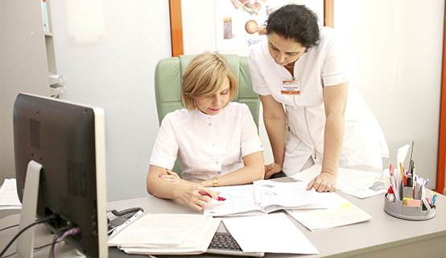
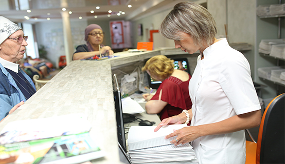
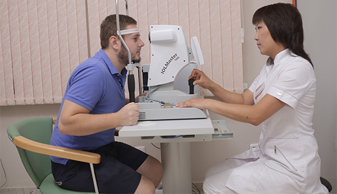
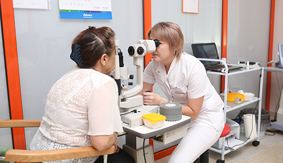
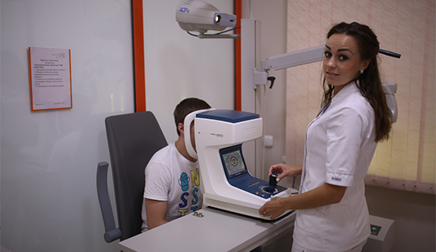
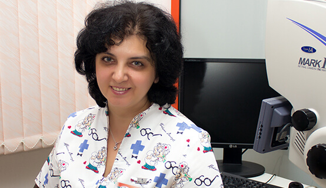
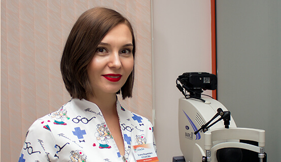
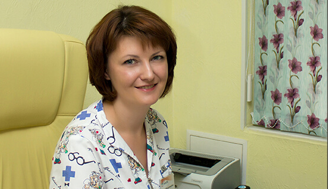
В клинике "ГлазоЛик" работают врачи-офтальмологи, обладающие опытом решения самых различных проблем
со зрением.
Офтальмологическая клиника "ГлазоЛик" оказывает современную офтальмологическую помощь всем тем, кто
в ней нуждается… Для этого у нас есть все – современные технические возможности, эффективные
методики, опыт и профессионализм. Микрохирургические операции на современном оборудовании,
микрохирургические лазерные операции для лечения заболеваний глаза.
В клинике "ГлазоЛик" работают врачи-офтальмологи, обладающие опытом решения самых различных проблем
со зрением.
Офтальмологическая клиника "ГлазоЛик" оказывает современную офтальмологическую помощь всем тем, кто
в ней нуждается… Для этого у нас есть все – современные технические возможности, эффективные
методики, опыт и профессионализм. Микрохирургические операции на современном оборудовании,
микрохирургические лазерные операции для лечения заболеваний глаза.
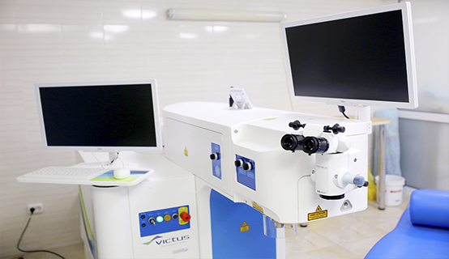
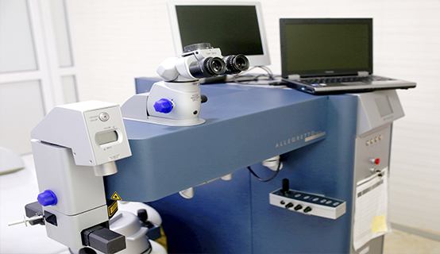
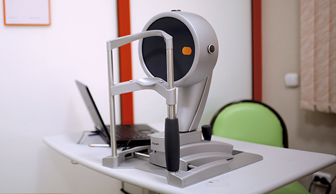
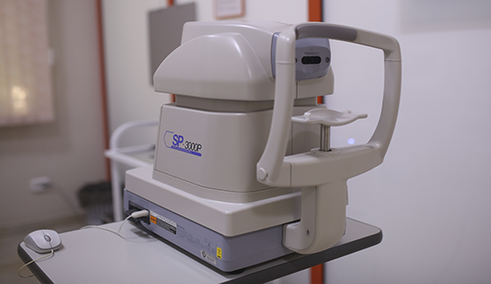
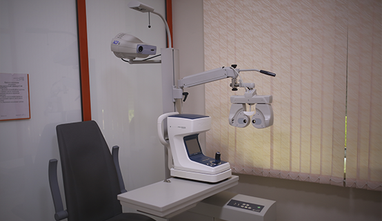
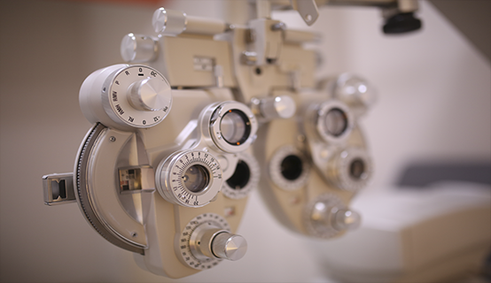
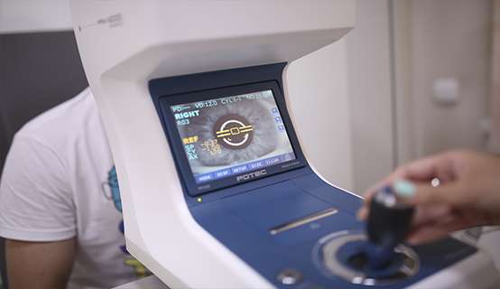
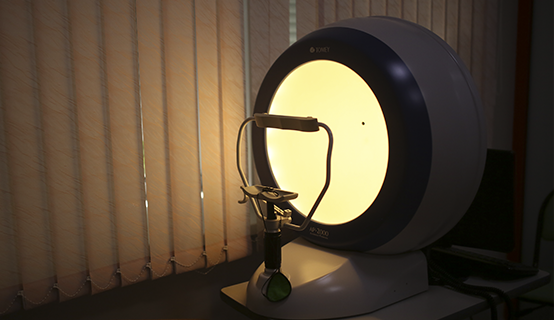
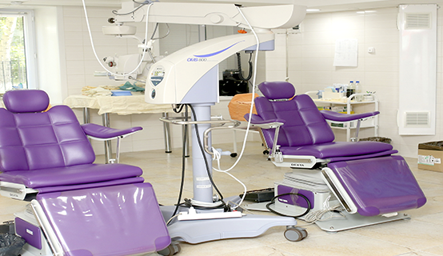
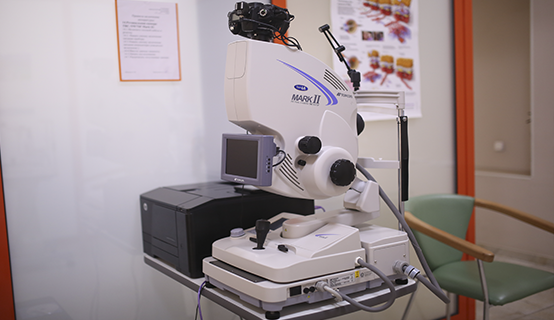
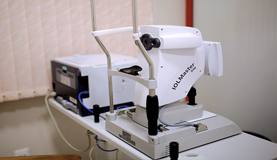
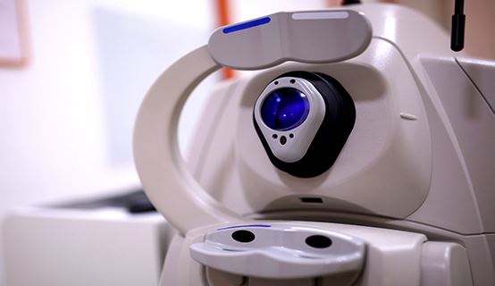
VICTUS - первая в мире фемтолазерная платформа одновременно для рефракционной и катарактальной
хирургии, для формирования тоннелей при имплантации роговичных сегментов, для выполнения
астигматических лазерных насечек при астигматизме. Является настоящим прорывом в офтальмологии.
Система использует короткие лазерные импульсы, длящиеся всего 10-15-ю часть
секунды. Хирург не делает ни одного разреза, а пациент может быть уверен в стопроцентном успехе
операции.
Данные особенности позволяют на базе системы проводить лечение катаракты, рефракционные и
терапевтические процедуры. При этом точность операций превосходит в разы стандартные методики.
Эксимеры ALLEGRETTO являются сегодня не только самыми быстрыми в мире (время коррекции 1Д при миопии
и полной оптической зоне 6.5мм составляет в зависимости от модели 1.6/2/4 сек (в сравнение с 9сек на
эксимере Esiris/Schwind или 5сек на Mel80/Zeiss Meditec), но и разрешенными к использованию в
наиболее широком рефракционном диапазоне как по близорукости, так и дальнозоркости и астигматизму.
Самый современный прибор для исследования топографии роговицы. С его помощью возможно проведение
операции ЛАСИК по методике персонализированной абляции.
Эндотелиальный микроскоп SP-3000P (TOPCON, Япония) - уникальный прибор, позволяющий с
непревзойденной точностью измерять толщину роговицы, анализировать состояние эндотелия роговицы.
Функция автоматического регулирования обеспечивает быстрое и точное выравнивание и измерение.
АВТОМАТИЧЕСКИЙ ПРОЕКТОР ЗНАКОВ АСР-8 (TOPCON, ЯПОНИЯ)
Обеспечивает четкое изображение проецируемых знаков при проверке остроты зрения.
АВТОМАТИЧЕСКИЙ ПРОЕКТОР ЗНАКОВ АСР-8 (TOPCON, ЯПОНИЯ)
Обеспечивает четкое изображение проецируемых знаков при проверке остроты зрения.
Прибор используется для измерения оптики глаза: сферической преломляемости, цилиндрической
преломляемости, направления астигматической оси, радиуса кривизны, направления основного меридиана и
состояния роговицы. В отличие от аналогичных автокераторефрактометров в данном приборе имеется новая
улучшенная измерительная система TOPCON Rotary Prism.
Прибор для исследования периферического зрения АР-2000 (Tomey GmbH, Япония) – разработан для того
чтобы удовлетворять требования современной офтальмологии. Он включает в себя такие современные
технологии, как светодиодный свет, тест «синий на желтом» и электронный контроль за положением
пациента. Благодаря тому, что АР-2000 имеет функцию учета предыдущих измерений одного и того же
пациента, время исследования может быть значительно сокращено. АР-2000 соответствует последним
стандартам в современной офтальмологии.
ОПЕРАЦИОННЫЙ МИКРОСКОП OMS-800 PRO (TOPCON, ЯПОНИЯ
Четкое и контрастное стереоскопическое изображение, отличное освещение, реалистичная цветопередача и
большая глубина резкости обеспечивают непревзойденную эффективность применения данного микроскопа
при проведении всех видов офтальмологических операций. Согласно основному принципу компании TOPCON
(Япония), являющейся лидером в производстве офтальмологического диагностического и хирургического
оборудования - «все для пользователя» этот прибор разработан для обеспечения высокоточного
изображения на протяжении всего срока службы.
Тщательно продуманная конструкция микроскопа обеспечивает безотказность его работы в операционной.
Новая революционная ретинальная камера TRC-NW7SF MarkII предлагает все возможности для черно-белой и
цветной фотографии сетчатки при расширенном и нерасширенном зрачке пациента. Также доступны сложные
диагностические процедуры такие, как ICG-ангиография*, флуоресцентная ангиография, бескрасная
фотография.
TRC-NW7SF предназначена для работы со всеми типами ретинальных заболеваний, включая диабетические и
другие виды
Высококачественная оптика, необходимая для мидриатических снимков, в сочетании с передовыми
цифровыми технологиями, требуемыми для немидриатической фотографии, отвечает различным клиническим
потребностям сегодняшнего дня. TRC-NW7SF - ретинальная камера, спроектированная для удобств
пользователя и для разноплановых офтальмологических исследований глазного яблока.
Имеет режим стерео для регистрации трехмерного изображения патологических изменений с увеличением
толщины сетчатки (макулярный отек, экссудативная ВМД, СНВ мембрана).
Особенность этой цифровой фундус-камеры – внешняя фотокамера с 12,3 Мп CMOS-матрицей, которая
позволяет различать точку размером с наименьший точечный экссудат (около 4 микрон), что чрезвычайно
важно для мониторинга качественной лазеркоагуляции. Мы получаем видимый размер точки – не менее 0,7
микрон. Это впервые, позволяет лазерному хирургу вести до- и послеоперационную оценку состояния
глазного дна с выявлением всех патологических изменений сетчатки.
Оптический биометр ИОЛ-Мастер (Zeiss, Германия) - воплощение простоты и совершенства. С его помощью
за считанные секунды производятся точнейшие измерения биометрических параметров глаза, необходимых
для расчета ИОЛ. Особенно ценно то, что замеры осуществляются бесконтактным способом. Одним нажатием
кнопки можно быстро получить точные данные о длине переднезадней оси глаза, радиусе кривизны
роговицы и её диаметре и глубине передней камеры.
Точность результатов измерения длины переднезадней оси глаза не зависит от аккомодационного статуса
и диаметра зрачка.
Возможно получение достоверных результатов на глазах с высокой близорукостью, стафиломами, афакией,
артифакией и после тампонады силиконом.
Интегрированная система персонализации констант обеспечивает каждому хирургу возможность достижения
идеальных результатов операции.
ОПТИЧЕСКИЙ КОГЕРЕНТНЫЙ ТОМОГРАФ CIRRUS HD–OCT (ZEISS, ГЕРМАНИЯ)
Открывает новые диагностические возможности благодаря спектральной технологии томографии.
Изображения с высоким разрешением обеспечивают данные, позволяющие точно оценить состояние
патологического очага и определить показания к медикаментозной терапии. Так, например, при
неоваскулярной форме возрастной макулярной дегенерации патологические изменения могут быть выявлены
и оценены в динамике с помощью кросс-секционного сканирования CIRRUS HD-OCT, послойного картирования
по сегментам и наложения карты толщины сетчатки на изображение глазного дна.
Сканирование сетчатки с высоким разрешением обеспечивает визуализацию мельчайших деталей строения
сетчатки и подробные особенности патологических изменений.
Сканирующее лазерное видеоизображение обеспечивает "живую" картину глазного дна высокого качества в
реальном времени.
Трёхмерное изображение послойного строения сетчатки обеспечивает прекрасную визуализацию
патологического очага для последующего планирования лечения и оценки его эффективности.